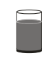

Bei einem Klassenfest sollen 60 Gläser
mit Limonade gefüllt werden.
In jedes Glas passen 0,3 Liter Inhalt.
Berechne, wie viele Flaschen Limonade mit 0,5 Liter Inhalt dafür gekauft werden müssen.
Felix schlägt vor, etwas kleinere, zylinderförmige Gläser zu benutzen. Jedes Glas hat einen Durchmesser von 6 cm, die Einfüllhöhe beträgt 10 cm.
Berechne, wie viel Limonade in ein solches Glas hineinpasst. Gib dein Ergebnis in Litern an.
Es gilt: 1 l = 1 dm³ = 1000 cm³
Volumen in cm³:
Ergebnis in Litern:
Gib den Wert mit Komma an, z. B. 0,500.